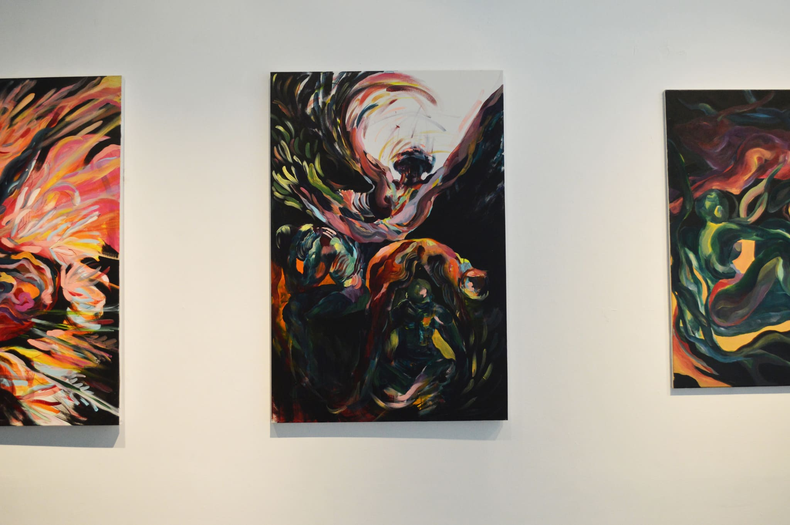
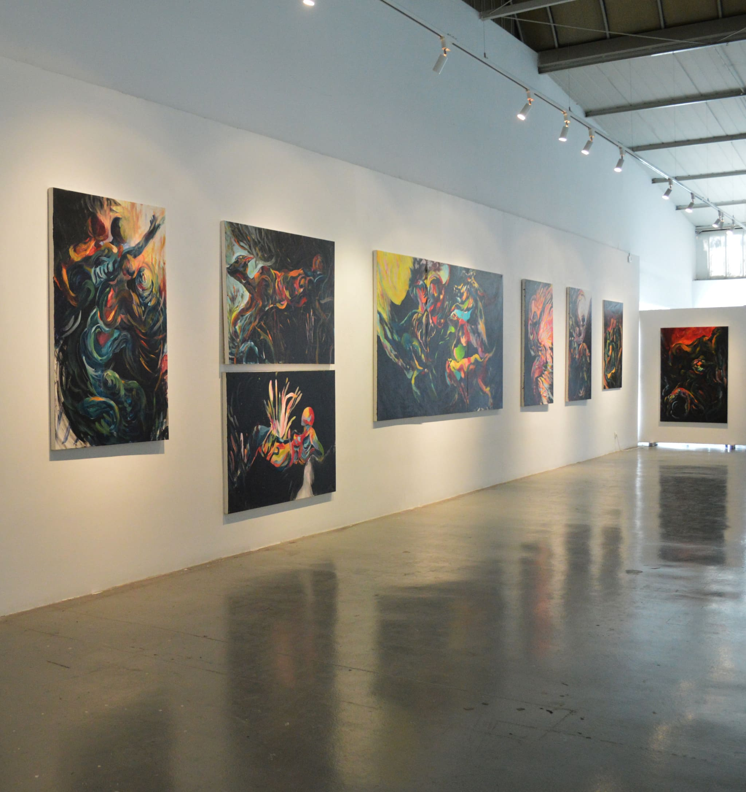
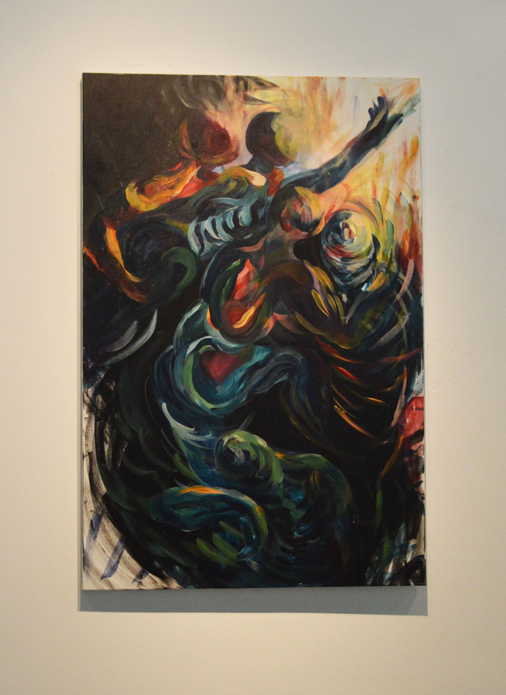
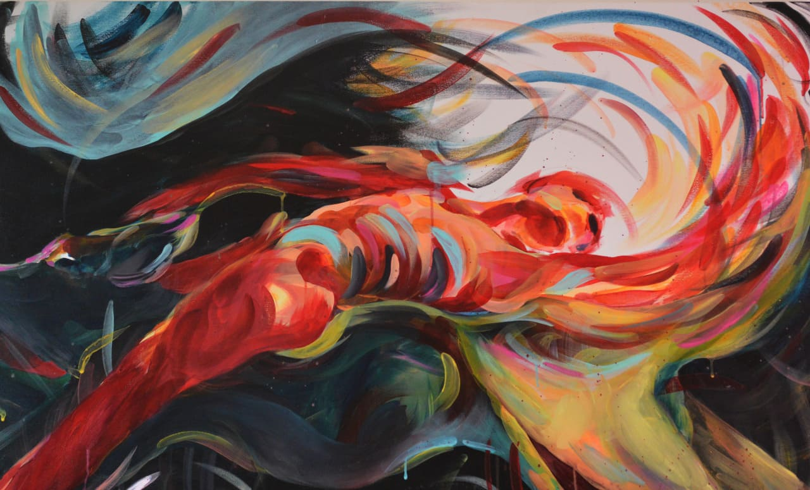
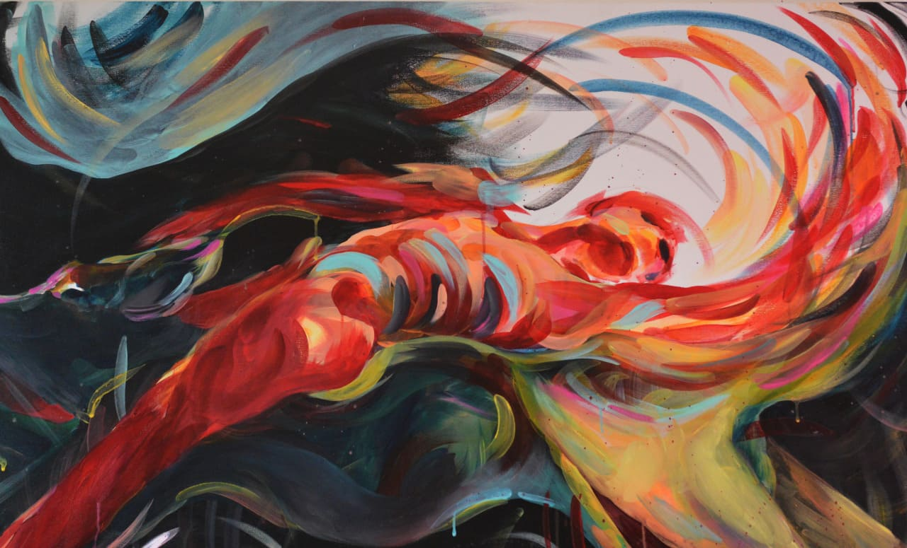

“When you soften, when you open. That’s when the light can enter”
Athens, June 2022
Within the framework of the annual exposition of the Fine Arts School in Athens GR, I presented my series of works with the title “When you soften, when you open. That’s when the light can enter”.
Description: This degree show at the Athens School of Fine Arts delved into the themes of vulnerability and resilience through a series of large-scale paintings and interactive installations. The project invites viewers to explore the notion that some moments feel more real than others, serving as an invisible portal to their deepest desires and emotions. It creates a narrative space of personal mythology, encouraging reflection and connection.
Process: I initiated the project with conceptual sketches that emphasized the interplay of light and shadow, developing the paintings using mixed media techniques. The process involved experimenting with various materials to evoke emotional responses, and I documented each stage to capture the evolution of my ideas.
Outcome: The exhibition was met with positive feedback for its immersive experience, successfully engaging viewers on an emotional level. Attendees appreciated the innovative use of space and interactivity, which enhanced their connection to the artwork. The project was recognized for its ability to provoke thought and inspire dialogue about personal experiences and collective memory.
Acrylics on canvas_ 100x150
  
 
